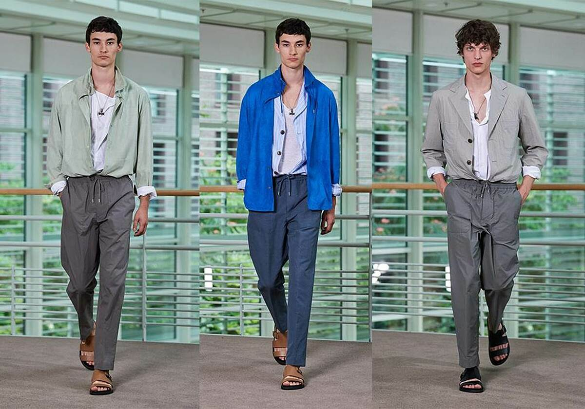
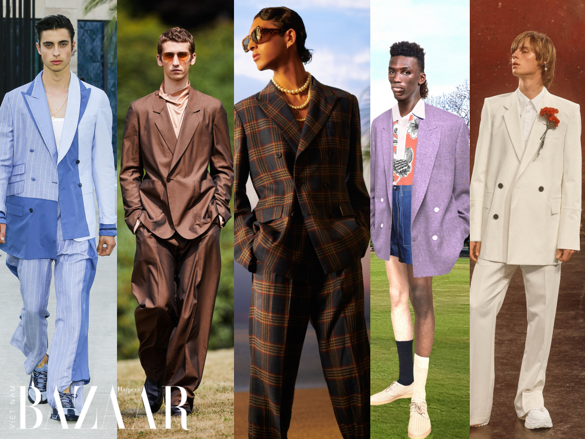
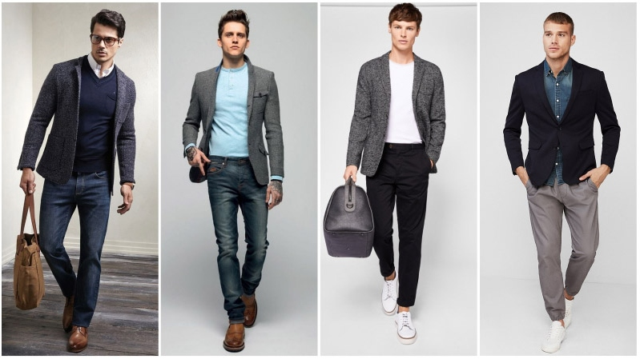
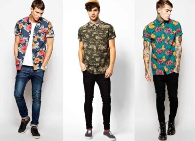
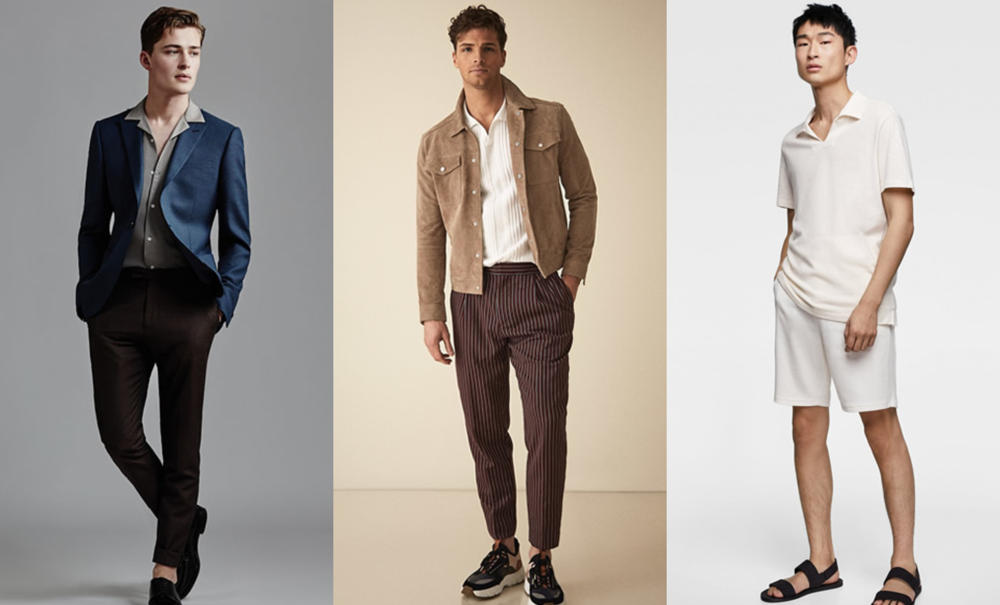
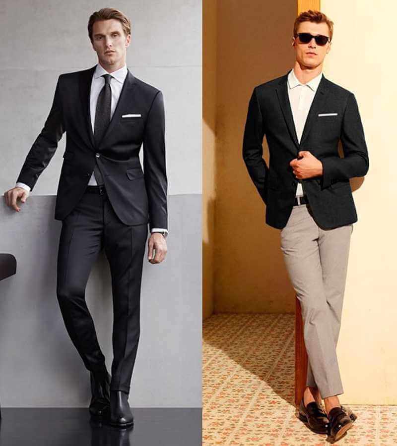
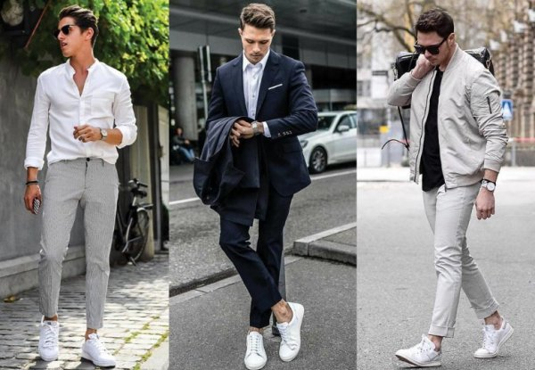
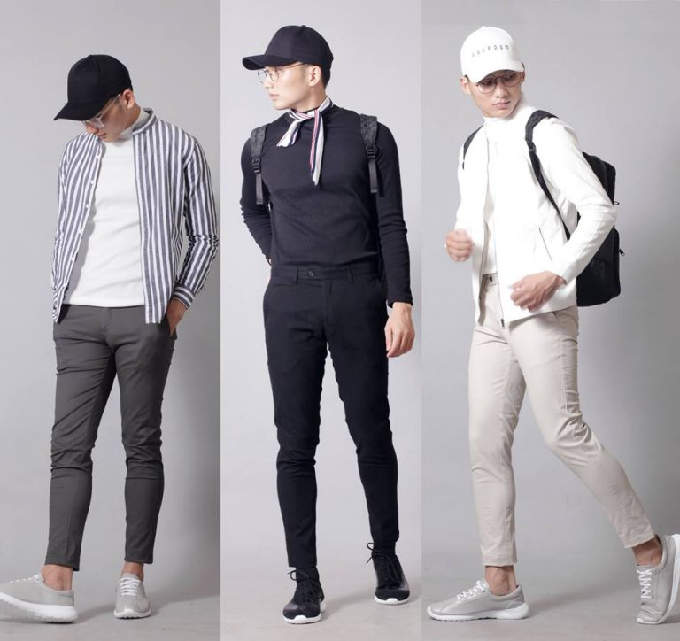

A&T NEWS
- 
Tuần lễ thời trang nam mùa Thu 2021 diễn ra trong một bối cảnh oi bức. - 
Tuần lễ thời trang nam mùa Động 2020 diễn
ra trong một bối cảnh nhiều biến động. - 
Show diễn thời trang nam mùa Hạ 1998 diễn
ra tại Mỹ. - 
Tuần lễ thời trang nam Xuân Hè 2001 diễn ra
tại TPHCM. - 
Tuần lễ thời trang nam Xuân Hè 2003 diễn ra trong một bối cảnh thuận lợi. - 
Tuần lễ thời trang nam Xuân Hè 2017 diễn ra trong một bối cảnh tuyết rơi.
Bộ jumpsuit dạ quang Dior hay một chiếc neon biker jacket Louis Vuitton sẽ khiến bạn trở nên nổi bật. Nếu bảo thủ hơn, hãy học cách Hermès và Homme Plissé Issey Miyake khéo léo phối neon với các màu sắc trung tính như xám và trắng. Nhấn nhá với phụ kiện neon như giầy hoặc túi cũng sẽ tăng thêm sự thời thượng cho bạn. ất nhiều thương hiệu đã có những thiết kế áo sơ-mi độc đáo. Xuân hè không phải là sân chơi chính của layering. Do đó một chiếc áo sơ-mi có thiết kế lạ mắt đủ trở thành tuyên ngôn phong cách. WooYoungMi và We11done biến tấu những chiếc áo sơ-mi cổ điển với form rộng hình lục giác.
Cái hay là những chiếc áo sơ-mi statement này phù hợp quanh năm. Mùa nóng, bạn diện nó một mình. Trong ngày se lạnh thì biến thành áo khoác mỏng bên ngoài với áo thun. Thời trang Statement nghĩa là qua trang phục, trang sức hay phụ kiện, người mặc có thể thể hiện được cái tôi – cá tính của người mặc: đẳng cấp, địa vị, sở thích, …
 Những đôi giày sneaker dáng "chunky" ngộ nghĩnh đã thống trị trong năm 2020 và có thể sẽ còn gây ảnh hưởng tới nhiều thiết kế giày dép khác, bao gồm cả giày dép công sở của nam và nữ. Những đế giày "chunky" đưa lại sự vững vàng, chắc chắn, thoải mái, thuận tiện. Nhiều phong cách giày dép khác cũng sẽ tiếp thu phong cách đế giày "chunky" với phong cách gọn gàng, tinh tế hơn. Phục trang rộng rãi
Phong cách thời trang bó sát không còn thịnh hành, những thiết kế rộng rãi, thoải mái đã được yêu thích hơn rất nhiều trong vài năm trở lại đây. Những trang phục "oversize" sẽ xuất hiện ngày càng nhiều trong năm 2021 bởi tính ứng dụng, sự thuận tiện, tính đa năng của trang phục đang ngày càng được đề cao.
Những chiếc áo khoác ấm áp mang kiểu dáng như áo sơ mi mà người ta hay gọi tắt là "shacket" sẽ còn tiếp tục được yêu thích trong năm 2021, đó là những chiếc áo mỏng nhẹ hơn áo jacket nhưng lại dày dặn và ấm áp hơn áo sơ mi. "Shacket" có sự hữu dụng, mềm mại và phù hợp để kết hợp trong các kiểu phối đồ. Bạn có thể mặc một chiếc "shacket" bên ngoài "tank top", áo phông hay áo len để gia tăng độ ấm cho những ngày hơi lạnh, hoặc mặc thêm "shacket" dưới áo khoác dày trong những ngày rất lạnh.  Áo Polo chính là sự pha trộn hài hòa giữa áo thun và sơ-mi, là một trong những item điển hình cho sự lịch lãm và thoải mái của một quý ông. Phái mạnh có thể mặc nó vào bất cứ thời gian nào trong năm nhưng phù hợp nhất vẫn là Xuân-Hạ. Một gợi ý nhỏ là những chiếc áo Polo khi kết hợp với quần tây hay quần sooc đều là những kết hợp hoàn hảo bất kể bạn đi làm, đi chơi hay tham gia những hoạt động khác. Một sự gây ấn tượng tuyệt vời nhưng cũng không hề đơn điệu đối với nửa kia của thế giới.